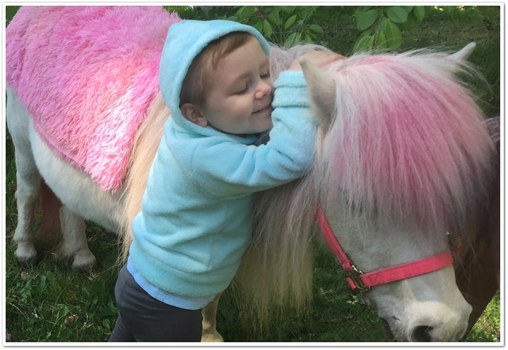
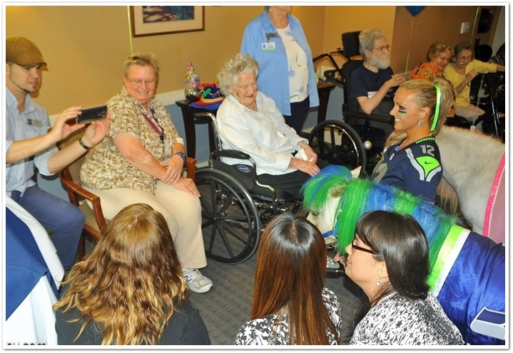
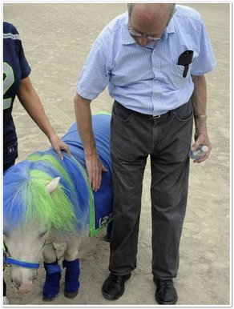

Equine Therapy Can Change Lives...
Scientific studies have shown that there are many positive effects of human-animal interaction. The presence of animals has a multitude of benefits for both children and seniors. Studies have proven that animal-human interaction and pet therapy can improve a person’s social, emotional, and physical health.
Some of the benefits of animal-assisted activities include:
Why Horses?
Some of the benefits of animal-assisted activities include:
- Reduces blood pressure
- Lowers anxiety and stress levels
- Stimulates the release of endorphins, which help people feel good- especially important for people who are feeling depressed or isolated.
- Encourages exercise and movement to help increase muscle strength, joint mobility, balance and coordination
- Shortens recovery time
- Stronger connections to the physical world and to other people
- Greater self-confidence and trust
- Leads to more independent & fulfilling lives
- Increases a sense of community
- Stimulates memory and sharing
- Improved communication, social and perceptual skills
Why Horses?
- Horses are sensitive and intuitive
- Horses mirror human emotions
- There is a powerful connection between horses and humans
- Horses offer non-judgmental affection
- Horses allow people to relax by providing acceptance and allowing for give and take, which also builds confidence and focus
- Small ponies and Miniature horses, because of their smaller size, provide a non-threatening therapy experience especially for children, seniors and those in wheelchairs.


Dreamland Ponies has been helping special needs children and seniors, both physically and emotionally, through interaction with our specially trained ponies and miniature horses since 2003.
Our therapy ponies visit hundreds of special people every year... To bring joy, comfort, affection and happiness into lives that benefit from the healing powers from touching and seeing them.
Our therapy ponies visit hundreds of special people every year... To bring joy, comfort, affection and happiness into lives that benefit from the healing powers from touching and seeing them.

It has been proven that touch is a very important aspect in the nourishment of the human mind. Animals bring warmth and contentment into a place (like hospitals) where ordinarily touch is invasive or not pleasant. Equine therapy has proven to be a powerful antidote to the feelings of loneliness, dependency, and isolation often experienced by individuals who are unable to live in their own homes or with family members. Not only does petting an animal reduce your heart rate and blood pressure, it also encourages socialization. In the presence of our ponies, even patients suffering from dementia tend to be less withdrawn and more in touch with their feelings. There is more laughter and interaction among residents and staff when animals are present, and often family members also come to visit on pet therapy day.
Our therapy ponies and miniature horses are available for personal visits or therapy sessions at hospitals, assisted living centers, rehabilitation facilities, hospice facilities, schools, daycare centers, private in-home visits and anywhere else they can help bring a smile to someone's face and brighten their day. In addition to hourly bookings, we also offer bi-weekly and monthly programs.
It is inspiring to watch the magical emotional connections and comforting effects our ponies have on everyone, young or old. They light up the room when they enter, and leave an unforgettable impression on people's hearts and souls long after they have gone. They have brought many tears of joy and happiness to the friends they visit, and to the people that witness the healing and life touching effect they have as angel therapy ponies.
Our ponies and minis are specially trained for this activity. They have natural incredibly sweet, kind and gentle demeanors, and have also received the same kind of training as mounted police horses. They are calm and professional in every environment, inside and out. They comfortably ride in elevators, climb up and down stairs and safely work around medical equipment, cords, wheelchairs, walkers, beds and extremely fragile children and seniors. They are both potty trained, and have special shoes to wear (when needed) so that when they leave the facility, it is as pristine as when they arrived. Our therapy ponies and miniature horses are all very small, and stand between 26" to 32" tall and weigh only 120 to 200lbs.
In a typical visit, our specially trained ponies are led from room to room, and residents are able to interact with the ponies by petting or cuddling them or simply by observing these gentle creatures, which look like giant stuffed animals that have come to life. Participating in these visits is one of the most rewarding aspects of working at Dreamland Ponies. Our professional, compassionate staff is exceptionally empathetic which allows us to make each of these interactions a more personalized and beneficial experience.
Additional Benefits:
When it comes to children's hospitals, what child has never wanted to be a cowboy or cowgirl? Most every little girl's dream is having a pony, and the small stature of the horses make them easy to hug without being intimidating.
Most people of age to be in nursing homes and assisted living facilities right now have, at some point in their lives, relied on horses. People in their 70's, 80's, and 90's have used horses to do work plowing fields. Many of them have ridden horses as a means of transportation, or used horse drawn wagons. Many of the people who have relied on horses at one point in their life, see them as a fond memory and relate them to feelings of freedom and strength. The touch, the smell, their fingers in the horse’s mane all conjure up emotions, memories of youth, and ultimately, a great story from the past!
The success that we’ve had with our clients is consistent with a growing body of evidence showing that equine-assisted therapy can be a highly effective treatment option for many individuals with physical impairments or developmental disabilities. According to the Institute of Equestrian Therapy, “Major improvements have been observed with cerebral palsy, down syndrome, autistic, emotionally disturbed, learning disabled, stroke and accident victims.”
If you are an Activities Director or other healthcare professional and would like to talk to us about a visit or learn more information about our therapy services please Contact Us.
Our therapy ponies and miniature horses are available for personal visits or therapy sessions at hospitals, assisted living centers, rehabilitation facilities, hospice facilities, schools, daycare centers, private in-home visits and anywhere else they can help bring a smile to someone's face and brighten their day. In addition to hourly bookings, we also offer bi-weekly and monthly programs.
It is inspiring to watch the magical emotional connections and comforting effects our ponies have on everyone, young or old. They light up the room when they enter, and leave an unforgettable impression on people's hearts and souls long after they have gone. They have brought many tears of joy and happiness to the friends they visit, and to the people that witness the healing and life touching effect they have as angel therapy ponies.
Our ponies and minis are specially trained for this activity. They have natural incredibly sweet, kind and gentle demeanors, and have also received the same kind of training as mounted police horses. They are calm and professional in every environment, inside and out. They comfortably ride in elevators, climb up and down stairs and safely work around medical equipment, cords, wheelchairs, walkers, beds and extremely fragile children and seniors. They are both potty trained, and have special shoes to wear (when needed) so that when they leave the facility, it is as pristine as when they arrived. Our therapy ponies and miniature horses are all very small, and stand between 26" to 32" tall and weigh only 120 to 200lbs.
In a typical visit, our specially trained ponies are led from room to room, and residents are able to interact with the ponies by petting or cuddling them or simply by observing these gentle creatures, which look like giant stuffed animals that have come to life. Participating in these visits is one of the most rewarding aspects of working at Dreamland Ponies. Our professional, compassionate staff is exceptionally empathetic which allows us to make each of these interactions a more personalized and beneficial experience.
Additional Benefits:
When it comes to children's hospitals, what child has never wanted to be a cowboy or cowgirl? Most every little girl's dream is having a pony, and the small stature of the horses make them easy to hug without being intimidating.
Most people of age to be in nursing homes and assisted living facilities right now have, at some point in their lives, relied on horses. People in their 70's, 80's, and 90's have used horses to do work plowing fields. Many of them have ridden horses as a means of transportation, or used horse drawn wagons. Many of the people who have relied on horses at one point in their life, see them as a fond memory and relate them to feelings of freedom and strength. The touch, the smell, their fingers in the horse’s mane all conjure up emotions, memories of youth, and ultimately, a great story from the past!
The success that we’ve had with our clients is consistent with a growing body of evidence showing that equine-assisted therapy can be a highly effective treatment option for many individuals with physical impairments or developmental disabilities. According to the Institute of Equestrian Therapy, “Major improvements have been observed with cerebral palsy, down syndrome, autistic, emotionally disturbed, learning disabled, stroke and accident victims.”
If you are an Activities Director or other healthcare professional and would like to talk to us about a visit or learn more information about our therapy services please Contact Us.
FREQUENTLY ASKED QUESTIONS ABOUT EQUINE THERAPY: